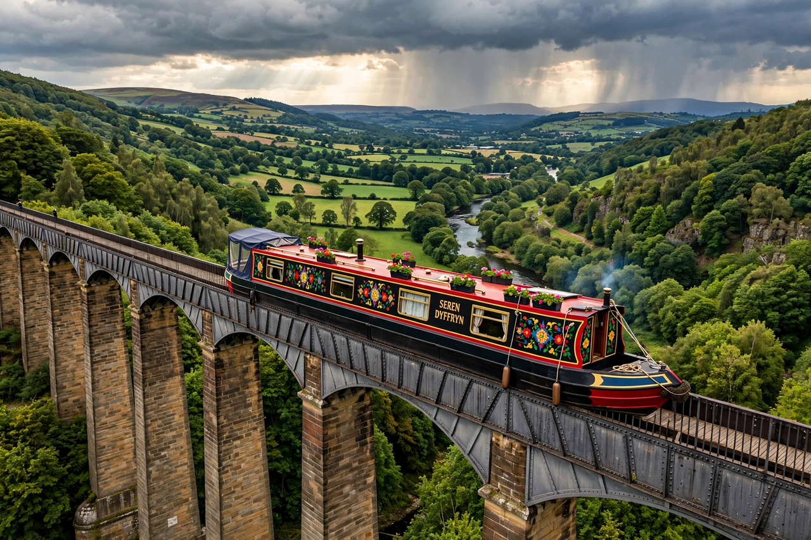

| Llangollen Canal | |
|---|---|
| Location | Shropshire, England; Wrexham and Denbighshire, Wales |
| Length | 46 miles (74 km) |
| Status | Open; part of the Shropshire Union Canal network |
| Construction began | 1795 (as part of the Ellesmere Canal) |
| Principal engineer | Thomas Telford |
| UNESCO | Pontcysyllte Aqueduct and Canal World Heritage Site (2009) |

The Llangollen Canal (Welsh: Camlas Llangollen) is a navigable canal in England and Wales. It runs from Hurleston Junction on the Shropshire Union Canal near Nantwich in Cheshire, through Shropshire and across the Welsh border to the feeder at Horseshoe Falls on the River Dee above the town of Llangollen in Denbighshire. It is one of the most popular canals for leisure boating in Britain, largely because of its spectacular aqueducts.
The canal was built as part of the Ellesmere Canal, an ambitious scheme promoted in the 1790s to link the rivers Mersey, Dee and Severn. The main line was never completed as planned, and the Llangollen section survived largely because it served as a water feeder from the River Dee, supplying the wider Shropshire Union network. When commercial traffic collapsed in the mid-20th century the canal was nearly closed, but its role as a feeder — it still carries around 12 million gallons of water a day toward Hurleston reservoir — protected it, and it was later restored for leisure use.
The canal's outstanding feature is the Pontcysyllte Aqueduct, designed by Thomas Telford and opened in 1805. Its cast-iron trough carries the canal 336 yards (307 m) across the Dee valley at a height of 126 feet (38 m) above the river, on eighteen slender masonry piers. Together with the Chirk Aqueduct and an 11-mile (18 km) length of the canal, it was inscribed as a UNESCO World Heritage Site in 2009.
From Hurleston the canal climbs through locks at Wrenbury and Grindley Brook, passes Whitchurch and Ellesmere, crosses the Chirk Aqueduct into Wales, traverses the Pontcysyllte Aqueduct at Trevor, and follows the Dee valley through Llangollen to the Horseshoe Falls feeder, built by Telford to draw water from the river.